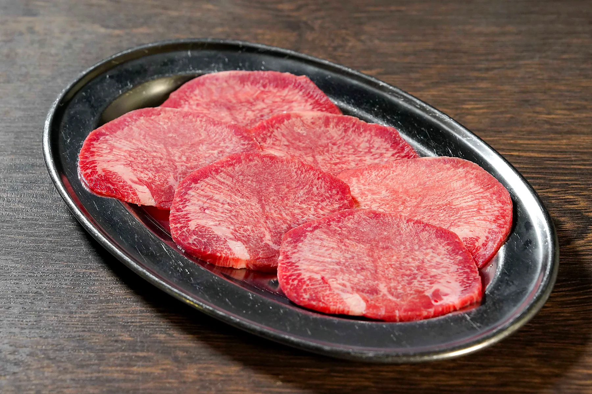
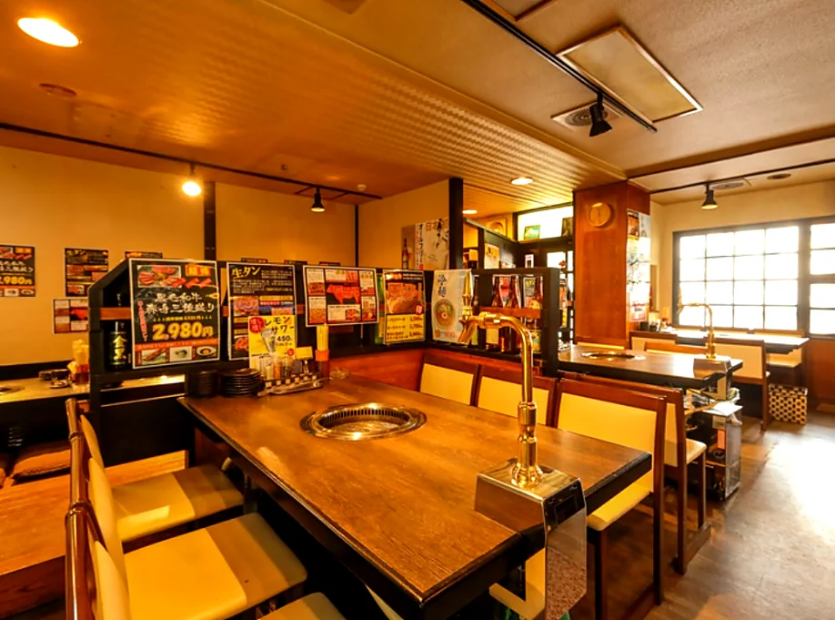
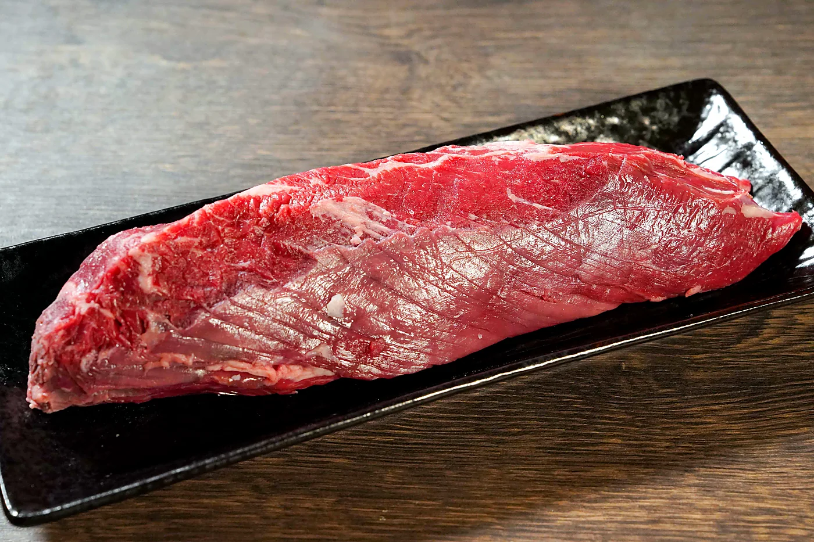
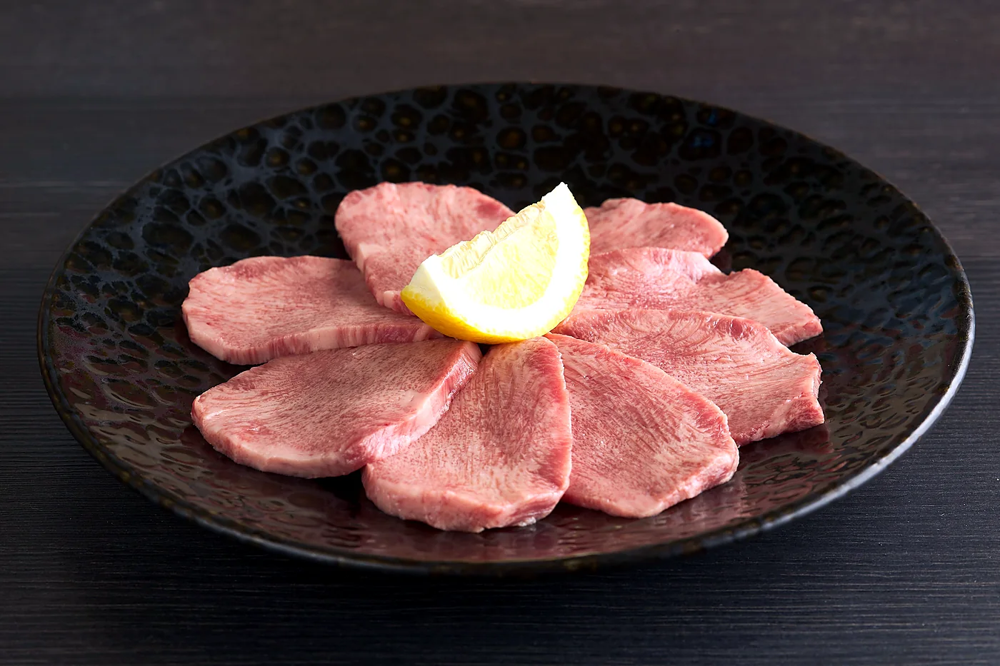

Namatan
生タン塩
一度も冷凍しない生のタン。厚切りでも柔らかく、噛むほどに肉汁が広がる看板料理です。

About
焼肉慶州は、地域のお客様に支えられながら味と品質を守ってきました。気取りすぎず、けれど一皿には妥協しない。その姿勢をこれからも大切にします。
慶州について読む
Namatan
一度も冷凍しない生のタン。厚切りでも柔らかく、噛むほどに肉汁が広がる看板料理です。

Harami
赤身の旨味と脂のバランスがよく、重すぎず満足感のある王道の一皿です。
Quality
和牛を中心に、価格以上の満足感を届けられるよう一皿ごとの状態を大切にします。確認できない産地や銘柄は掲載せず、誠実な情報だけを届けます。
News
21:00時点でお客様がいない場合は閉店する場合があります。21:00以降にご来店の場合は、必ず事前予約をお願いします。
月曜祝日は16:00-21:30で営業し、翌火曜日を休みとします。月曜祝日前日の日曜日は16:00-23:00で営業します。
年末年始、ゴールデンウィーク、お盆などの大型連休は営業予定です。最新情報はInstagram等でご確認ください。

Hours
| 曜日 | 営業時間 | ラストオーダー |
|---|---|---|
| 火・水・木・金・祝前日・祝後日 | 17:00-23:00 | 料理 22:00 / ドリンク 22:30 |
| 土・祝日 | 16:00-23:00 | 料理 22:00 / ドリンク 22:30 |
| 日 | 16:00-21:30 | 料理 21:00 / ドリンク 21:15 |
| 月 | 定休日 | 月曜が祝日の場合は営業 |
21:00時点でお客様がいない場合は閉店する場合があります。21:00以降にご来店の場合は、必ず事前予約をお願いします。最新の臨時営業情報はInstagram等でご確認ください。
Reservation
オンライン予約またはお電話で承ります。21:00以降のご来店は事前予約をお願いします。